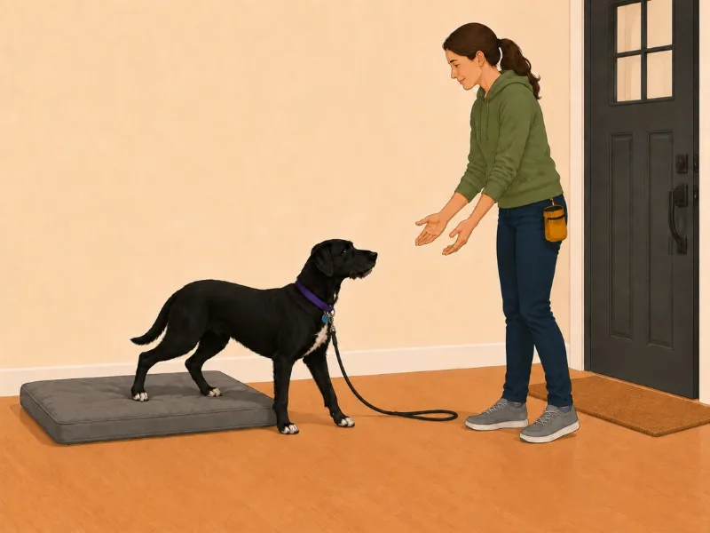
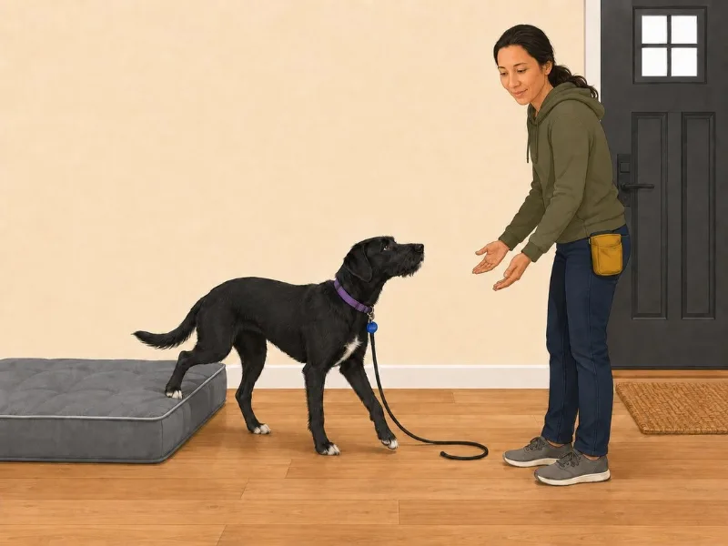

Build write-up · 5 min read
How I built Lucy Learns
A dog-training app that works offline, built for my own household. I designed, built and illustrated it alone, with the AI tools run from a terminal instead of a chat window. What that changed about how I work, and what it did not.
- Role
- Everything: product, design, build
- Built with
- Plain JavaScript, a service worker and the Web Speech API; no framework, no build step
- Runs as
- An installable phone app that works offline, served from GitHub Pages
- Status
- In use, still in development
-

01 Pick up where the trainer left off
-

02 Run it one instruction at a time
-

03 Finish on a win
My approach
-
01Research
- A trainer’s handouts, written for someone sitting still
- Practice watched where it happens: leash in one hand, five minutes
- Acceptance criteria written to be falsifiable on a real phone
-
02Design
- Progress in the trainer’s levels, not points and streaks
- One instruction per screen, one tap per rep
- Voice commands tried for eighteen days, then a step timer
-
03Build
- Plain JavaScript modules: no framework, no build step, no dependencies
- Service worker for offline, local storage for state, Web Speech API to read the steps aloud
- Illustrations from JSON specs a Node script posts to an image model
- AI built working versions in an afternoon. I judged them
-
04Test
- On a real phone: installed, offline, one-handed
- A contrast script gates every commit against the WCAG floor
- A blind pilot: four models, shuffled order, filenames hidden
- Two pictures failed and were redrawn until strangers read them right
The problem
We hired a professional trainer for our dog. What came back was a stack of handouts: good instructions, written for a person sitting still. Practice happens in a hallway, leash in one hand and treat pouch in the other, five minutes at a time, and by evening nobody remembers whether the barking is actually getting better or whether it was just a bad Tuesday.
So the app has a narrow job: turn the handouts into something you can run one-handed, and record enough that “is this working” has an answer. It supports the trainer. It does not replace one, and it does not diagnose behavior.
Five decisions that shaped it
Progress is measured in the trainer’s units, not mine
The obvious move is points, streaks, a satisfying progress bar. The unit here is the level, because the level is what the trainer talks in: the number on the app’s program map is the number in her lesson report, so nobody reconciles the two in their head. Points would have looked more like a product and been worse at the job.
-

The program, in her levels
-

The week, ready to hand to the trainer
-

The cues, in her words
Logging happens during the session, not after it
One tap after each repetition, one more on arousal to save the session. That is the entire logging burden, capped deliberately: anything heavier does not get used with a dog attached to your other arm. The tally is a record of what happened, not a reconstruction at the end of the day.
Speaking and listening, split
Speaking and listening got split, because they cost completely different things. Speaking runs on the device, needs no permission, and works with no signal, so the app reads the steps aloud by default. Listening shipped audio to a server, needed a microphone permission an installed web app does not reliably keep, and failed where practice actually happens.
Speakingon by default
- Runs on the device
- No permission needed
- Works with no signal
Listeningoff by default
- Ships audio to a server
- Needs a microphone grant
- Needs a connection
Listening came out after eighteen days
The split held up. The listening half did not, and it was not the microphone that took it out. A handler saying “next step” brightly at a phone is saying words, in the cue voice, at a dog who is being taught that words in that voice are for her. The commands avoided every cue and still shared the room with them, and no amount of practice was going to make that a fair thing to ask of Lucy.
So the listening came out, and the steps turn by themselves instead. A switch on the get-ready screen puts each step on a timer, and the same control sits in a strip on every step beside a pause and a live count, so the pace gets changed where it feels wrong rather than on a settings page. The Next button fills as the clock runs, so from arm’s length you can see it about to press itself. Reading aloud stayed exactly as it was, because it asks nothing of anyone’s voice.
The clock never answers the rep question. It walks the steps and stops on the last one, because the log is built from that single observation, and a timer that answered it would be the reflex “went well” made automatic. One session with it rewrote every label to say timer or step, because “Move on by itself” was met with “move what on?”, and put the step’s number in front of each instruction the voice reads: the beat the handler wanted, and the cushion an idle audio route needed. Eighteen days to find out, a day to replace it, and the labels rewritten before that day was out.
Built for two postures
The session screen was designed around where your hands actually are, and that turns out to be two different places.

In one hand
Phone in whichever hand the leash leaves free. The app reads each step aloud so you never look down, and with the timer on the steps turn by themselves. The one tap left is the one that says how the rep went.

On a stand
The setup for the busiest moments: the phone, or an iPad, propped upright in portrait where you practice. The instruction reads from a step away, the steps turn on the timer, and both hands stay with the dog until the rep question needs a thumb.
A terminal, not a chat window
It did not decide what to build. Every decision above came from watching two people fail to practice consistently, and from twenty years of knowing which shortcuts turn into support tickets later.
The hard part of illustrating a training app is not getting a model to draw a woman training a dog. It is that it has to be the same dog every time: the same black coat, the same white chest, the same scruffy face, the collar with the round blue tag, and the same handler in the same room. From one screen to the next, almost nothing is allowed to change except the behavior being taught. The dog turns toward her. The leash goes slack. The door opens. That is a design problem before it is a drawing problem: an established state, one intended change, and a long list of things that have to stay put.
What the terminal changed is how far I can carry that alone. The illustrations have been redrawn twice from it, not from a chat window: each scene is a JSON spec that a Node script assembles and posts to OpenAI’s image model. Reference images in a set order, each with a named job: the style exemplar always first, a likeness sheet for the handler and one for Lucy, and for an adjacent moment the previous picture itself, so that nothing but the action may differ. Then the prose to prepend, and one sentence naming what the picture has to get right, which is what every round is checked against before anyone looks at it twice.
A chat window drew the first eight and worked. It also lost what makes a bad picture diagnosable: which references were attached, and in what order, the strongest lever on consistency there is. So they became ordered data, the prompt’s numbered list is generated from that same array, and the script refuses a wrong request before it costs anything. And when a redraw drifts, the fix is to go back to the last round that was right and change one thing, not to keep correcting the drifted one. Every round is on file, so that is a choice rather than a memory.
That is where the time went, and the four styles the app has had are the receipt for it.
-

01Painted, in a chat window
The set the app launched with. It is a picture of a house rather than an instruction: the room carries more detail than the step does, and at the 56 pixels the program map gives it, none of that detail survives. Lucy is also not the same dog twice — twelve of the thirty it drew put her in a harness she does not own.
-

02Warm vector, still in a chat window
The room empties out and the rules about the dog get absolute: flat fills, one action per frame, a collar with a round blue tag and never a harness, in any image, ever. Still drawn by pasting prose into a chat window, though, so no round was recorded and no picture could be asked for the same way twice.
-

03Cool and flat, from the terminal
The first set a script drew rather than a conversation: every scene a JSON spec, the reference images ordered, every round on file. It also took the app’s chrome a little too literally and painted the violet onto the walls, which is the one thing nobody asked it for.
-

04The wall repainted, in one afternoon
The violet belonged to the app, not the room, and taking it back out meant repainting every wall in the library. That is the whole argument for the pipeline: the same change a month earlier would have been another five days in a chat window, and this time it was an afternoon with every round on file.
-

01 First launch, explained with a picture
-

02 Every level opens on its scene
-

03 Twenty-four portraits from the same pipeline
Making a picture got cheap, so making one stopped being the accomplishment. The decisions moved up a level: what has to stay the same, what is allowed to vary, whether the picture shows the behavior it claims to, and when to stop. The judgment did not change. The distance between thinking and making did.
How I checked it before shipping it
Three things, all cheap.
The acceptance criteria are falsifiable. Every line is observably true or false on a real phone, and someone who has never seen the code reaches the same verdict I would. Written that way they are testable rather than admirable.
The illustrations got a comprehension pilot before I spent a real panel on them:
- Four language models, no knowledge of the project, saw the same eight images in different orders
- One question each: what is the person doing, and what is the dog doing
- Two pictures failed outright, all four viewers misreading them the same way
- Both were redrawn and passed the same blind check with fresh viewers before shipping
Not a substitute for testing with people. A way to catch the obvious failures for free, before the expensive test is worth running.

Before · 0 of 4
After · redrawnThe third check is use, and it is the one that takes features out. Anything I am not sure of ships switched off, gets turned on in the hallway, and either earns its place or goes. Voice commands went, eighteen days after they arrived, for a reason no diagram could have shown, and the timer that replaced them had every label rewritten after one session. A feature that survives that is one I have watched work, not one I expect to.